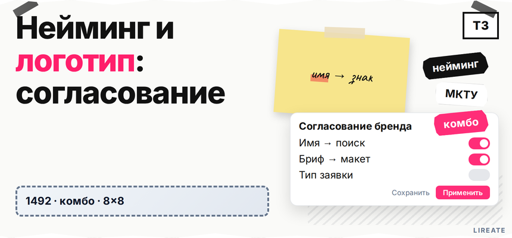
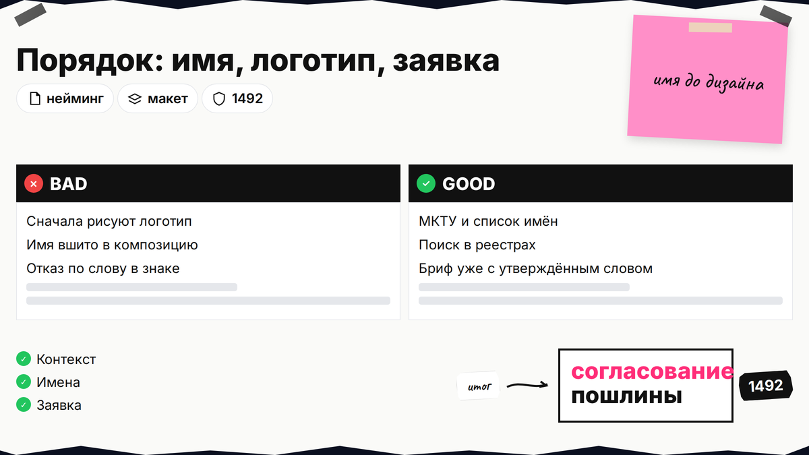
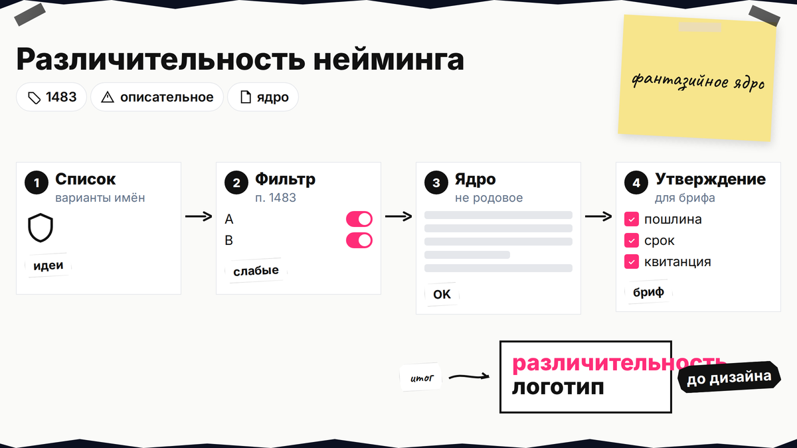
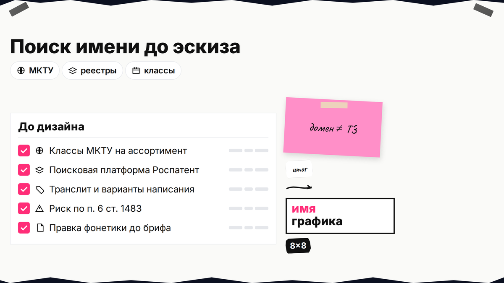

Заказали красивый логотип, а Роспатент отказал по слову в композиции - бюджет на дизайн и заявку сгорел? Типичная ошибка: рисуют знак раньше, чем имя проходит по МКТУ (международной классификации товаров и услуг - список классов, по которым охраняют бренд) и реестрам. Ниже - маршрут нейминг и логотип: сначала согласовать название, потом макет, потом выбрать одну комбинированную заявку или несколько отдельных. Нормы ГК РФ и Роспатента на 18.11.2026; не индивидуальная юридическая консультация.

TL;DR / Быстрый инсайт: По ст. 1492 ГК РФ в одной заявке - один товарный знак; связка "название + рисунок" чаще оформляется как комбинированное обозначение, но охрана идёт на всю композицию, а не всегда на слово отдельно. Делайте: классы МКТУ и поиск имени - до брифа дизайнеру (чек по реестрам); макет - только под утверждённое слово; стратегию заявок - до оплаты пошлин. Не делайте: финальный логотип, пока имя не проверено на сходство по п. 6 ст. 1483.
Товарный знак - регистрация обозначения на рынке, а не только файл от дизайнера. Комбинированный знак - текст + графика в одном макете; в графе 571 указывают вид и состав (Роспатент). Смежные темы: L06, L11, L38, L48.

Делайте: за один рабочий созвон зафиксируйте каналы, где будет жить бренд: упаковка, сайт, приложение, маркетплейс, реклама. От этого зависит, нужна ли вам одна связка "слово внутри знака" или отдельное использование символа без текста.
Не делайте: запускать тендер на логотип, пока нет хотя бы двух-трёх имён-кандидатов, прошедших быстрый отсев по описательности. Иначе дизайнер вшьёт слабое или описательное слово в центр композиции, и спасти знак можно только полной переделкой (L39).
Схема согласования:
Бизнес-контекст и классы МКТУ → короткий список имён → поиск в реестрах → утверждённое слово → бриф и макет → выбор типа заявки → описание и файл 8×8 см → подача

По п. 1 ст. 1483 ГК РФ не регистрируют обозначения без различительной способности: чисто описательные, указывающие на вид товара, или хвалебные фразы вроде "лучший" без фантазийного ядра.
Делайте: соберите 5-15 вариантов и отметьте, какие слова слабы сами по себе, а какие тянут сильное "фантазийное" ядро (новое слово или неожиданное сочетание). Не делайте: вкладывать в имя только родовое название категории ("Чайный дом" для чая) - отказ придёт ещё до оценки красоты логотипа.

Классы МКТУ подберите до эскиза: перечень товаров и услуг в заявке должен совпадать с реальным ассортиментом на 3-5 лет вперёд, иначе охрана будет "не там", где вы торгуете (подробный подбор - в L06, здесь только фиксация до макета).
Делайте: для финалистов имени откройте Поисковую платформу (бесплатно с 11.12.2023, ГАРАНТ) и открытые реестры ФИПС: смотрите зарегистрированные знаки и поданные заявки в выбранных классах, проверяйте транслит и варианты написания. Алгоритм подробно - в материале L01. Не делайте: доверять только свободному домену: домен не равен свободе товарного знака.
При высоком риске по п. 6 ст. 1483 измените фонетику или написание до передачи слова дизайнеру.
В бриф входят: точное написание утверждённого имени (кириллица, латиница, если нужны обе версии), выбранные классы МКТУ, запрет на доминирование слабых описательных слов в композиции, требование исходников и перехода прав (L11).
Делайте: заложите в макет читаемость словесной части на маленьком размере (иконка приложения, штрихкод на упаковке). Не делайте: просить "красиво, как у конкурента" без списка запретов на сходные элементы - это не заменяет поиск по изобразительной части, но снижает явные дубли.
Делайте: утвердите один финальный вектор: охраняемое слово, неохраняемый декор, версия для заявки. Не делайте: три компоновки "на выбор эксперту" в одном файле. Слабую графику дорабатывайте по L39.
| Как вы используете бренд в продажах | Типичная стратегия заявки | Что помнить |
|---|---|---|
| Везде только связка "логотип + название" как на этикетке | Одна комбинированная заявка | Охрана на композицию; слово отдельно от значка может не покрываться |
| Часто пишете имя без значка (домен, текст рекламы) | Словесная заявка ± комбинированная | Две заявки - два комплекта пошлин (один знак - одна заявка) |
| Значок без текста (favicon, иконка приложения) | Изобразительная заявка | Отдельный поиск по графике; комбо не заменяет |
| Гибкий бренд: и связка, и раздельно | Комбо + словесная и/или изобразительная | Дороже, зато шире реальное использование |
Делайте: честно отметьте в таблице, как продаёте сегодня и через год. Не делайте: подавать только комбинированную заявку, если в рекламе постоянно фигурирует одно слово без рисунка - конкурент может занять словесный знак.
Каждый самостоятельный знак - отдельная заявка и отдельное описание (п. 2 ст. 1492). Заявка включает заявление, изображение обозначения, перечень по МКТУ и текстовое описание (FAQ Роспатент).
По слову ФИПС может сделать платную оценку охраноспособности (46 200 ₽ за класс, тариф) после самопроверки.
Делайте: закройте чек-лист: имя, классы, макет, права на файл, набор заявок, описание без опечаток. Не делайте: менять написание в день оплаты пошлин.
Итоговый вердикт: согласованный нейминг и логотип - это не вкус арт-директора, а цепочка решений под ГК РФ. Сначала охраноспособное имя и классы, потом макет под это имя, потом осознанный выбор: одна комбинированная заявка или несколько знаков под реальные сценарии использования.
Назначьте ответственного за реестр заявок и версии макета. Сохраните протокол согласования имени и подписанный финальный файл логотипа. Когда пакет готов, подачу и сопровождение можно оформить через Лирейт - после того как внутренний чек-лист закрыт без красных зон по поиску.
Материал проверен: эксперт Елена Ковалева (Главный эксперт по SEO/GEO).
Достоверность данных: нормы ст. 1483, 1492 ГК РФ, состав заявки и описание обозначения сверены с материалами Роспатента и КонсультантПлюс на ноябрь 2026 года.
Да, если это одно комбинированное обозначение: слово и графика в единой композиции. Отдельное словесное или изобразительное имя в ту же заявку "добавить" нельзя - понадобится вторая заявка по ст. 1492.
Часто нет: использование только значка без текста может выходить за рамки охраны одной комбинированной регистрации. Если иконка без слова - ваш рабочий сценарий, заложите изобразительную заявку или отдельную стратегию.
Да. Сначала МКТУ и поиск в Поисковой платформе/ФИПС (L01), затем бриф дизайнеру. Иначе переделка макета и повторная оплата креатива почти неизбежны при отказе по слову.
Словесный знак фиксирует написание (в заявленной графике) без привязки к вашему рисунку. Комбинированный охраняет конкретное расположение слова и графики; другое сочетание тех же элементов может не считаться использованием зарегистрированного знака.
После подачи вы не замените обозначение "как в черновике". Сначала словесная заявка, потом новая заявка на комбинированный или изобразительный знак - отдельные процедуры и пошлины.
В цветной заявке палитра фиксируется в описании; макет должен совпадать. Выберите один цветовой вариант до подачи.
Домен не даёт приоритета в реестре ТЗ. Проведите поиск по классам бизнеса, рассмотрите доработку имени или легальную смену домена до печати упаковки. Онлайн-слои проверки до заявки - в L38.